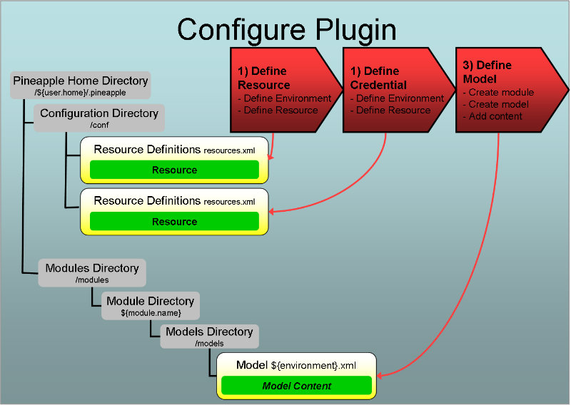

Introduction
Overview
Invoking the plugin
The plugin is invoked by the core component when the core component is used by one of the Pineapple clients. To trigger invocation by the core component the plugin needs to be configured.
Configuration
Three steps are needed to configure the plugin:
- Define resource: Define a WebLogic MBean server as a resource. The resource is used by Pineapple to access the server configuration using the JMX plugin.
- Configure network protocol usage: The resource definition can include the definition of the network protocol used by the plugin to communicate with the MBean Server. The different network protocols each requires some configuration to work. Depending on the selected protocol, the required configuration is either done in the WebLogic domain, additional JVM arguments used to start WebLogic or by adding 3rd party libraries to Pineapple.
- Define credential: Define user name and password for the server in a credential. The security information in the credential is accessed from the resource and used for authentication when the server is accessed by the plugin.
- Define the module and add a model which contains WebLogic MBeans and attributes. The MBeans (including attributes) are used to test, create, update and delete the configuration of the targeted resources. The model and the MBeans are defined using the The WebLogic Domain schemas.
For more info about configuration of plugins:
- For info about resources and credentials read the Environment configuration document.
- For info about modules and module models read the Modules configuration document.
Supported operations by the plugin
The plugin supports the operations:
- test
- create-report
- deploy-configuration
- undeploy-configuration
For more information about the default operations, refer to the Operation and workflow reference.
Execution of the test operation
When invoked with this operation the plugin will:
- Traverse the module model and validate that the MBeans exists in the WebLogic Edit MBean server and their attribute values are equal.
Execution of the create-report operation
When invoked with this operation the plugin will:
- Ignore the module model, but traverse the MBean model and create a report that lists all configurations in the WebLogic Edit MBean server.
This operation can be time consuming since the entire MBean Model in the WebLogic Edit MBean server is traversed.
Execution of the deploy-configuration operation
When invoked with this operation the plugin will:
- Traverse the module model and create all the MBeans (and set defined attributes) defined in the model.
The result of this operation should be that the subsequent execution of the test operation should result in a 100% success (Otherwise you have found a bug in the plugin).
Execution of the undeploy-configuration operation
When invoked with this operation the plugin will:
- Traverse the module model and delete all the MBeans defined in the model.
The result of this operation should be that the subsequent execution of the test operation should result in a lot of failures since none of the MBeans should exist.
Define resource
The purpose of defining a resource for this plugin is twofold:
- Define a mapping between the resource ID and the plugin ID. The resource ID is the user defined key which is referenced from module models which are targeting the resource. The plugin ID is the Java package name which implements the plugin: com.alpha.pineapple.plugin.weblogic.jmx.
- Define connectivity information used by the plugin to connect to the remote WebLogic MBean server.
To define a new resource, add a resource element to the target environment in the configuration file ${pineapple.home.dir}/conf/resources.xml:
<?xml version="1.0" encoding="UTF-8"?>
<configuration xmlns="http://pineapple.dev.java.net/ns/environment_1_0"
xmlns:xsi="http://www.w3.org/2001/XMLSchema-instance">
<environments>
<environment id="linux-default" >
<resources>
<resource id="weblogic-edit-jmx"
plugin-id="com.alpha.pineapple.plugin.weblogic.jmx"
credential-ref-id="weblogic-edit-jmx" >
<property key="host" value="127.0.0.1" />
<property key="port" value="7001" />
<property key="url-path" value="weblogic.management.mbeanservers.edit" />
</resource>
</resources>
</environment>
</environments>
</configuration>
For all the details about configuration of environments and resources, please visit the Environment Configuration Reference.
The semantics of the resource element is:
The id attribute
Identifies the resource uniquely in the current environment. In the above example the id weblogic-edit-jmx will define JMX access to a WebLogic Edit MBean Server from models.
The credential-ref-id attribute
Id for the credential which is used to lookup user name and password for this resource.
The plugin-id attribute
Defines the plugin id for which should be used to execute operations for the resource. The plugin id for this plugin is: com.alpha.pineapple.plugin.weblogic.jmx.
The property attributes(s)
Mandatory properties used by the plugin:
- host - Host name of the WebLogic server where the MBean server is running.
- port - Port number of the WebLogic server where the MBean server is running.
- url-path - URL path to the MBean server which defines the JNDI name used to access the server. For more information, please consult: Accessing WebLogic Server MBeans with JMX.
Optional properties used by the plugin:
- protocol - Protocol used to access the MBean server. The configuration requirements for enabling usage of the protocols are documented in the section Configure network protocol usage. If the protocol property isn't defined, then the default value is JDK_IIOP. This value is default because it doesn't require any 3rd party libraries to be included or configured with Pineapple prior to using the plugin. Legal values are:
- HTTP - Oracle Implementation of the HTTP protocol supplied with WebLogic.
- HTTPS - Oracle Implementation of the HTTP protocol supplied with WebLogic.
- IIOP - Oracle Implementation of the IIOP protocol supplied with WebLogic.
- IIOPS - Oracle Implementation of the IIOP protocol supplied with WebLogic.
- RMI - Oracle Implementation of the RMI protocol supplied with WebLogic.
- T3 - T3 protocol supplied with WebLogic.
- T3S - T3S protocol supplied with WebLogic.
- JDK_IIOP - JDK implementation of the IIOP protocol.
- JDK_RMI - JDK implementation of the RMI protocol.
Define credential
A credential defines authentication information used to access a protected resource. The WebLogic server accessed by the plugin is protected by a user-id/password. So a credential needs to be defined.
The credentials.xml file
The credentials are by default defined in the file ${pineapple.home.dir}/conf/credentials.xml.
The credentials file is also defined using the environment configuration schema which defines the http://pineapple.dev.java.net/ns/environment_1_0 namespace. Since credential files only contain elements from a single namespace all the elements and attributes are unqualified. The header and root element should be defined as (look in the Environment configuration document for more details):
<?xml version="1.0" encoding="UTF-8"?> <configuration xmlns="http://pineapple.dev.java.net/ns/environment_1_0" xmlns:xsi="http://www.w3.org/2001/XMLSchema-instance" />
Credentials are grouped by environment
Credentials are grouped by environment the same way as resources are. If the required environment doesn't exists in the credential files, then define it, and add the credential to it.
Add a new environment sub element with the id linux-default to the environments element in the credential file:
<?xml version="1.0" encoding="UTF-8"?>
<configuration xmlns="http://pineapple.dev.java.net/ns/environment_1_0"
xmlns:xsi="http://www.w3.org/2001/XMLSchema-instance">
<environments>
<environment id="linux-default" />
</environments>
</configuration>
Definition of the credential
Add a new credential to the environment:
<?xml version="1.0" encoding="UTF-8"?>
<configuration xmlns="http://pineapple.dev.java.net/ns/environment_1_0"
xmlns:xsi="http://www.w3.org/2001/XMLSchema-instance">
<environments>
<environment id="linux-default">
<credentials>
<credential id="weblogic-edit-jmx" user="weblogic" password="Weblogic99" />
</credentials>
</environment>
</environments>
</configuration>
The semantics of the credential elements is explained in the next sub sections:
The id attribute
Id of the credential in the current environment.
Notice: The example id weblogic-edit-jmx is referenced from the resource example defined in the previous section.
Define the module

A module defines the input used by Pineapple to execute operations. A module is defined by a directory layout. Part of a module is the model(s) which defines what happens when the module is invoked. A model is put together by one or more sub models from different plugins. Each plugin defines its own schema for its particular model
The WebLogic Domain schemas
The plugin uses multiple schemas for definition of models. The main domain schema defines the namespace:
- http://xmlns.oracle.com/weblogic/domain.
The domain schema uses three auxiliary security schemas which defines the namespaces:
- http://xmlns.oracle.com/weblogic/security.
- http://xmlns.oracle.com/weblogic/security/wls.
- http://xmlns.oracle.com/weblogic/security/xacml.
Finally, the diagnostics schema defines the namespace:
- http://xmlns.oracle.com/weblogic/weblogic-diagnostics.
For more information about where the schemas can be found, refer to the Schema locations for plugins page.
Name and location of the the module model file
Models using the domain schemas are defined in the module model files which are located at ${module-dir}>/models/${environment}.xml where:
- ${module-dir} is the Module Directory which identifies the module with a unique name and version.
- ${environment}.xml is a model file for a target environment, with ${environment} substituted with the environment name, e.g. linux-default.xml for an environment named linux-default.
If the module model file doesn't exist for an environment where a model should be executed, then create the file and name it after the target environment.
The module model configuration schema
Module model files are defined using the module model configuration schema which defines the http://pineapple.dev.java.net/ns/module_model_1_0 namespace. Since module model files contain elements from multiple namespace all the elements and attributes should be qualified. The header and root element should be defined as (look in the Modules configuration document for more details):
This example shows definition of the minimal model file for linux-default:
<?xml version="1.0" encoding="UTF-8"?> <mmd:models xmlns:xs="http://www.w3.org/2001/XMLSchema-instance" xmlns:mmd="http://pineapple.dev.java.net/ns/module_model_1_0" />
Adding the plugin schema to the model
The next step is to include the The WebLogic Domain schemas to get access to the entities defined by the schema:
<mmd:models xmlns:xs="http://www.w3.org/2001/XMLSchema-instance"
xmlns:mmd="http://pineapple.dev.java.net/ns/module_model_1_0"
xmlns:wjp="http://xmlns.oracle.com/weblogic/domain"
xmlns:sec="http://xmlns.oracle.com/weblogic/security"
xmlns:wls="http://xmlns.oracle.com/weblogic/security/wls"
xmlns:xsi="http://www.w3.org/2001/XMLSchema-instance"
xsi:schemaLocation="http://xmlns.oracle.com/weblogic/security/xacml
http://xmlns.oracle.com/weblogic/security/xacml/1.0/xacml.xsd
http://xmlns.oracle.com/weblogic/security/providers/passwordvalidator
http://xmlns.oracle.com/weblogic/security/providers/passwordvalidator/1.0/passwordvalidator.xsd
http://xmlns.oracle.com/weblogic/domain
http://xmlns.oracle.com/weblogic/1.0/domain.xsd
http://xmlns.oracle.com/weblogic/security
http://xmlns.oracle.com/weblogic/1.0/security.xsd
http://xmlns.oracle.com/weblogic/security/wls
http://xmlns.oracle.com/weblogic/security/wls/1.0/wls.xsd" />
Now we have a minimal module model file with these namespaces:
- xs: The basic XMLSchema schema which is only used in the root element of the document.
- mmd: The module model schema which is used to define the skeleton of a model file.
- wjp: The WebLogic domain schema which is used to define MBeans.
- sec: The WebLogic security domain schema.
- wls: The WebLogic security domain schema #2.
Defining the model which targets resources
Add a new model with a target-resource attribute. The value of the target-resource should match the id of the resource which was defined previously in the section Define resource, e.g. weblogic-edit-jmx:
<mmd:models xmlns:xs="http://www.w3.org/2001/XMLSchema-instance"
xmlns:mmd="http://pineapple.dev.java.net/ns/module_model_1_0"
xmlns:wjp="http://xmlns.oracle.com/weblogic/domain"
xmlns:sec="http://xmlns.oracle.com/weblogic/security"
xmlns:wls="http://xmlns.oracle.com/weblogic/security/wls"
xmlns:xsi="http://www.w3.org/2001/XMLSchema-instance"
xsi:schemaLocation="http://xmlns.oracle.com/weblogic/security/xacml
http://xmlns.oracle.com/weblogic/security/xacml/1.0/xacml.xsd
http://xmlns.oracle.com/weblogic/security/providers/passwordvalidator
http://xmlns.oracle.com/weblogic/security/providers/passwordvalidator/1.0/passwordvalidator.xsd
http://xmlns.oracle.com/weblogic/domain
http://xmlns.oracle.com/weblogic/1.0/domain.xsd
http://xmlns.oracle.com/weblogic/security
http://xmlns.oracle.com/weblogic/1.0/security.xsd
http://xmlns.oracle.com/weblogic/security/wls
http://xmlns.oracle.com/weblogic/security/wls/1.0/wls.xsd" >
<mmd:model target-resource="weblogic-edit-jmx">
<mmd:content />
</mmd:model>
</mmd:models>
Add content to the model which uses the plugin through the weblogic-edit-jmx reference:
<mmd:models xmlns:xs="http://www.w3.org/2001/XMLSchema-instance"
xmlns:mmd="http://pineapple.dev.java.net/ns/module_model_1_0"
xmlns:wjp="http://xmlns.oracle.com/weblogic/domain"
xmlns:sec="http://xmlns.oracle.com/weblogic/security"
xmlns:wls="http://xmlns.oracle.com/weblogic/security/wls"
xmlns:xsi="http://www.w3.org/2001/XMLSchema-instance"
xsi:schemaLocation="http://xmlns.oracle.com/weblogic/security/xacml
http://xmlns.oracle.com/weblogic/security/xacml/1.0/xacml.xsd
http://xmlns.oracle.com/weblogic/security/providers/passwordvalidator
http://xmlns.oracle.com/weblogic/security/providers/passwordvalidator/1.0/passwordvalidator.xsd
http://xmlns.oracle.com/weblogic/domain
http://xmlns.oracle.com/weblogic/1.0/domain.xsd
http://xmlns.oracle.com/weblogic/security
http://xmlns.oracle.com/weblogic/1.0/security.xsd
http://xmlns.oracle.com/weblogic/security/wls
http://xmlns.oracle.com/weblogic/security/wls/1.0/wls.xsd" >
<mmd:model target-resource="weblogic-edit-jmx">
<mmd:content>
<wjp:domain >
<wjp:name>alphadomain</wjp:name>
</wjp:domain>
</mmd:content>
</mmd:model>
</mmd:models>
The domain schema defines valid MBeans and their attributes, which is again mirrored in the WebLogic MBean reference documentation so please consult these for more information.
Configure network protocol usage
The plugin supports different network protocols to communicate with the WebLogic MBean Server as shown above in the documentation for the protocol attribute.
All protocols requires some additional form of configuration to work.
The protocols can be split into two groups:
- Protocol implementations provided by WebLogic: HTTP, HTTPS, IIOP, IIOPS, RMI, T3, T3S.
- Protocol implementations supported by the JDK classes: IIOP, RMI
Protocol implementations provided by WebLogic
WebLogic includes implementations of network protocols which can be used to access WebLogic MBean servers. The network protocols are implemented in the WebLogic Stand-alone Client Libraries.
Oracle recommends that JMX clients use these implementation due to efficiency.
The plugin supports usage of these network protocols. Unfortunately it isn't able to support them out-of-the-box due to the licensing policy for the libraries which prohibits redistribution of them.
To use these protocols, add a suitable WebLogic client library to Pineapple, e.g. wlfullclient.jar or the combination of wljmxclient.jar and wlclient.jar.
Configuration for the Oracle implementation of HTTP(S)
Usage of the Oracle implementation of the HTTP protocol supplied with WebLogic requires:
- The IIOP protocol must be enabled in the WebLogic domain (is enabled by default). To enable the IIOP protocol select: ADMSERVER | Protocols | IIOP | Enable IIOP.
- Tunneling must be enabled in the WebLogic domain. To enable tunneling select: ADMSERVER | Protocols | General | Enable Tunneling.
- A WebLogic client library must be added to Pineapple.
Configuration for the Oracle implementation of IIOP(S) and T3(S)
Usage of the Oracle implementation of the IIOP protocol supplied with WebLogic requires:
- The IIOP protocol must be enabled in the WebLogic domain (is enabled by default). To enable the IIOP protocol select: ADMSERVER | Protocols | IIOP | Enable IIOP.
- A WebLogic client library must be added to Pineapple.
Configuration for the Oracle implementation of RMI
Usage of the Oracle implementation of the RMI protocol supplied with WebLogic requires:
- The IIOP protocol must be enabled in the WebLogic domain (is enabled by default). To enable the IIOP protocol select: ADMSERVER | Protocols | IIOP | Enable IIOP.
- Configure the default IIOP user and password to be a WebLogic Server user with Administrator privileges. To configure the default IIOP user select: ADMSERVER | Protocols | IIOP | Advanced | Set Default IIOP Username, Default IIOP Password and Confirm Default IIOP Password.
- A WebLogic client library must be added to Pineapple.
Protocol implementations supported by the JDK classes
The plugin support usage of two network protocol using JDK classes only.
Configuration for the JDK implementation of IIOP
Usage of the JDK implementation of the IIOP protocol requires:
- The IIOP protocol must be enabled in the WebLogic domain (is enabled by default). To enable the IIOP protocol select: ADMSERVER | Protocols | IIOP | Enable IIOP.
- Configure the default IIOP user and password to be a WebLogic Server user with Administrator privileges. To configure the default IIOP user select: ADMSERVER | Protocols | IIOP | Advanced | Set Default IIOP Username, Default IIOP Password and Confirm Default IIOP Password.
Configuration for the JDK implementation of RMI
Usage of the JDK implementation of the RMI protocol requires:
- The IIOP protocol must be enabled in the WebLogic domain (is enabled by default).
- Configure the default IIOP user and password to be a WebLogic Server user with Administrator privileges.
- The JMX Connector must be enabled for WebLogic by setting these JVM arguments:
-Dcom.sun.management.jmxremote -Dcom.sun.management.jmxremote.port=7091 -Dcom.sun.management.jmxremote.ssl=false -Dcom.sun.management.jmxremote.authenticate=false
The shown JVM arguments is just an example of the basic configuration for enabling the JMX connector. Ports and security must be adopted accordingly to the requirements of your environment.
Furthermore
Configuration
Requirement for definition of WLDF resources
..The WLDF system resource is defined as a child element to the domain element..
..only one WLDF system resource can be targeted to a server at a time..
A note about descriptor file names
On a WLDF module it is possible to define the location of the configuration file for the module should be stored, using the element descriptor-file-name. If the descriptor file name is undefined then the configuration file is stored in ${domain-home}>/config/diagnostics with the same name as the module.